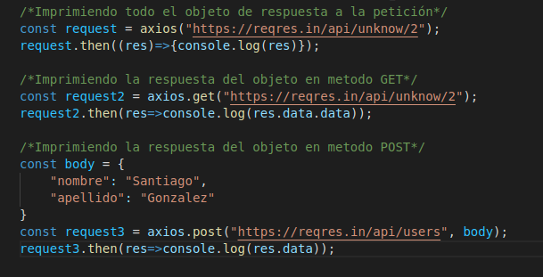

Lección 15 - Libreria Axios
Definición: Axios es una libreria que posee un remplazo mas moderno de fetch, si vamos a utilizar muchas peticiones lo mejor es que
usemos Axios. Esta libreria tambien esta basada en promesas y hace uso de la tecnologia XMLHTTPRequest
Ventajas:
- La información devuelta ya no viene encriptada como en fetch, por lo que no es necesario realizar dos veces el .then()
- Para definir el metodo de la petición no es neesario asignarle unas configuraciones, si no simplemente luego del axios.get
axios.post, etc.
- Al igual que fetch, si no se define el metodo este tomara GET
- Otra gran ventaja del axios es que no es necesario asignarle el content-type, ya que este lo define automaticamente
Codigo
